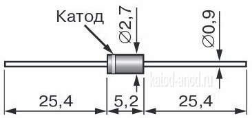
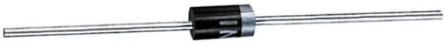

Диод 1N4001
Диод 1N4001 - кремниевые, выпрямительные, общего назначения.
Предназначены для преобразования переменного напряжения в диапазоне напряжений 50 ... 1000 В и токе до 1 А.
Диоды выпускаются в пластмассовом цилиндрическом корпусе DO-41 с жесткими проволочными выводами.
На корпус нанесена цветовая круговая (кольцевая) метка, обозначающая катод диода.
 |
 |
|
| Рис. 1 - Размеры диода 1N4001 | Рис. 2 - Внешний вид диода 1N4001 |
Таблица 1
| Максимальное постоянное обратное напряжение (Uобр max) | 50 В |
| Максимальное импульсное обратное напряжение импульсное (Uобр имп max) | 60 В |
| Максимальный прямой(выпрямленный за полупериод) ток (Imax) | 1 A |
| Максимально допустимый прямой импульсный ток (Iимп max) | 30 A |
| Максимальное прямое напряжение при Iпр=1 А (Uпрям max) | 1,1 В |
| Максимальный обратный ток (Iобр max) | 5 мкА |
| Емкость p-n перехода (Cp-n) | 15 пФ |
| Масса | 0,35 г |
| Рабочая температура | -65 ... +150C |
Аналоги 1N4001
- Отечественные - КД208, КД221, КД243, КД247, КД257
Источники
chipdip.ru - 1N4001, Диод выпрямительный 1А 50В [DO-41]
eandc.ru - Диоды выпрямительные 1N4001, 1N4002, 1N4003, 1N4004, 1N4005, 1N4006, 1N4007